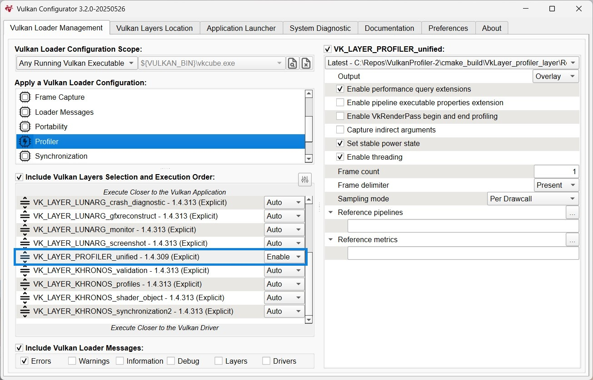

Configuration
The layer can be configured to handle more specific use cases.
For list of all available configuration options, see Options section.
Vulkan Configurator
The easiest way to configure the layer is to use VkConfig tool, which is installed as a part of the Vulkan SDK. It is a GUI application that lists all available layers and their options, allowing to quickly set up the layer chain.
Environment variables
The layer can also be enabled by setting environment variables before launching an application. Depending on the version of the Vulkan loader installed on the system, there are 2 variables available.
New loaders provide a variable that allows to use a glob expression instead of the full name of the layer, so the command can be simplified a bit.
set VK_LOADER_LAYERS_ENABLE=*profiler_unified
export VK_LOADER_LAYERS_ENABLE="*profiler_unified"
The old way of enabling the layers requires providing the full name of the layer.
set VK_INSTANCE_LAYERS=VK_LAYER_profiler_unified
export VK_INSTANCE_LAYERS="VK_LAYER_profiler_unified"
Deprecated since version 1.3.234: The variable is still supported by the newer Vulkan loaders, but it has been deprecated and will be removed in the future. Prefer using VK_LOADER_LAYERS_ENABLE instead.
Once enabled, the layer can be configured using the environment variables as well. In such case, all options have to be prefixed with VKPROF_, for example:
set VKPROF_sampling_mode=pipeline
set VKPROF_frame_delimiter=present
set VKPROF_frame_count=3
export VKPROF_sampling_mode="pipeline"
export VKPROF_frame_delimiter="present"
export VKPROF_frame_count=3
Configuration file
Warning
This method does not enable the layer, so one of the approaches described above has to be taken before using the file.
The profiling layer also supports a standarized vk_layer_settings.txt file.
The file has to be placed in the profiled application’s directory. It can be used to configure other layers as well, and has higher priority than options set by the Vulkan Configurator, so application specific settings can be applied this way.
profiler_unified.sampling_mode = pipeline
profiler_unified.frame_delimiter = present
profiler_unified.frame_count = 3